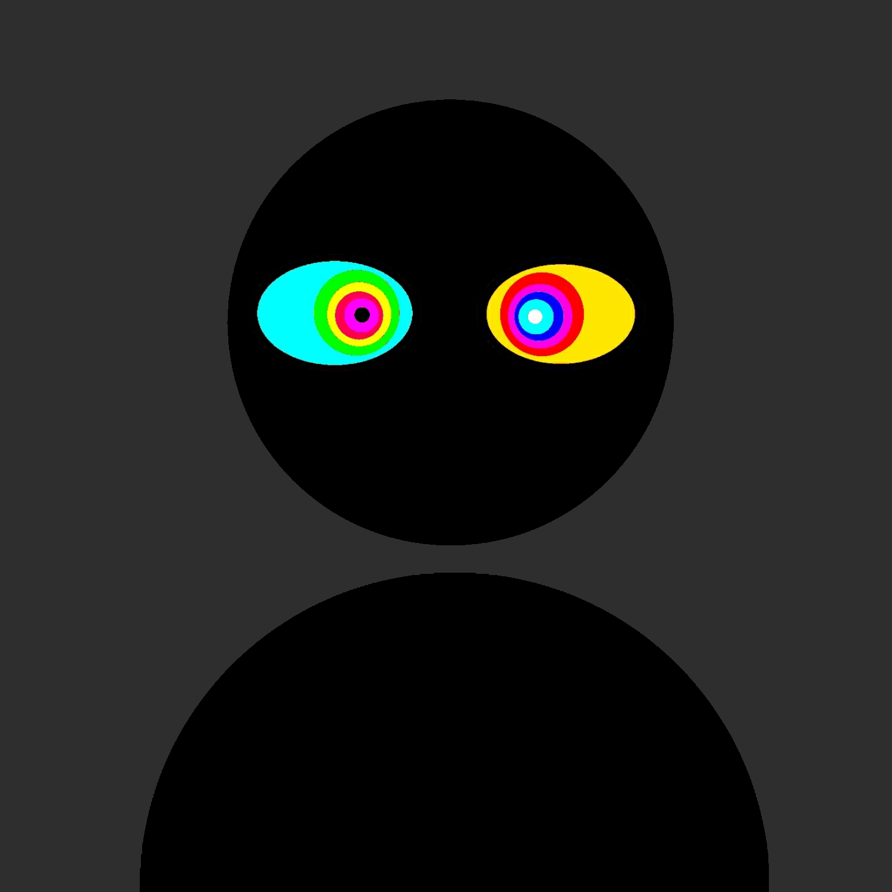
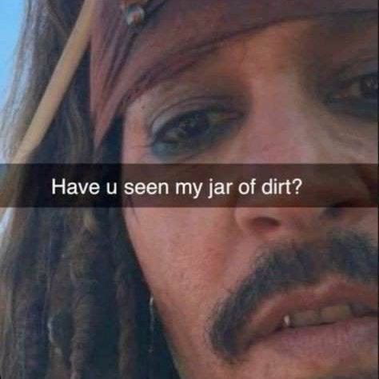

"social"

Dude, I'm so drunk that everything is good and I wanna be spit roasted by two muscular mfs with bbcs. hn hopefully dad doesn't see this XD W alcohol for keeping me alive almost single handedly...cigs the goat lol I wish I was a girl, maybe I would've had a better time on this dumbass rock. Double hope dad doesn't see this, if he does I'm disowned for the second time lmao. Future me problems. Btw hi Aylin, you're awesome sauce:) Also I miss my ex, she was fun, cute and quite smart...my trauma acted up though, fuck that piece of shit, I'd kill it if it wasn't a part of me. Ramble over, imma go back to drinking... and fantasizing ig, toodaloo-
Hmm come to think of it, I'm a walking contradiction myself. I hate lies yet I lie myself, I hate life yet I can't kms, I hate love yet I still want to be loved...for some dumb reason I haven't quite found out yet, and I hate fake shit yet sometimes I don't recognize myself. Well, guess logic fails in explaining chaotic irrationality lmao. Seriously though what the fuck.
Realized this is a contradiction to my philosophy,so I might delete it shortly. Until then though, everything pisses me off. Myself especially but alas, c'est la vie.
Depression got it's claws in me again, that's why I'm not doing much of anything and everything is stagnant. It'll pass eventually. Well, one of us will lmao.
Got woken up at 3am tonight by loud knocking and scratching, idk what was causing it yet but ffs why the fuck at 3am istg.
Test

You know, freedom is nice but creative freedom is powerful this project is the first in a while that I can freely enjoy creating something, it's fun.